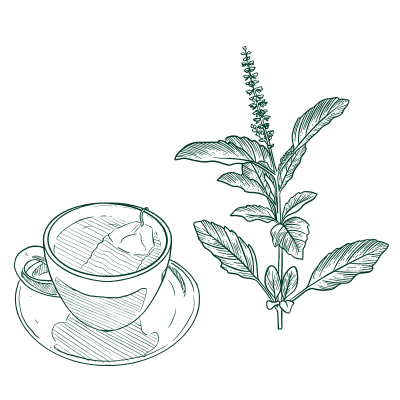
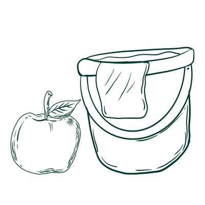

Fever
Explore those cultural home remedies to see how fever can be treated differently.

×
India: Tulsi Tea
Tulsi tea is a traditional Indian remedy also known as the Holy Basil tea. The herbal tulsi is known for its natural antipyretic and immune-boosting effects. Its leaves contain compounds like eugenol and ursolic acid, and they help reduce body temperature and fight infections.
Ingredients:
- 4-6 springs of fresh tulsi
- Lemon balm
- Anise hyssop
Steps:
- Lay out tulsi sprigs and leaves in a single layer on a clean dish towel or drying rack. Allow to sit for one full day to wilt.
- After the herb is wilted, heat water to 190 degrees F or just below boiling.
- Place the wilted tulsi in a quart canning jar. Pour the hot water over the herbs. Cover the jar with a lid or plate to capture the volatile oils.
- Steep at least 15 minutes.
- Strain if desired and drink, or cool further, pour over ice. Enjoy!

×

Egypt: Cold Hibiscus Tea
Cold hibiscus tea is also known as Karkadeh in the Egyptian culture; it is a traditional herbal remedy made from hibiscus flowers. It is commonly used to help manage fever and cool the body due to its natural antipyretic and diuretic properties.
Ingredients:
- Water
- Dried hibiscus flowers
- Sugar
- Limes
- Fresh mint sprigs
Steps:
- Boil 6 cups of water, then add dried hibiscus and sweetener. Let it boil briefly, then turn off the heat and steep covered for 20-30 minutes.
- Pour through a fine strainer into a pitcher, discard the flowers, and mix in lime juice.
- After it cools down, adjust with more water or sweetener if needed.
- Refrigerate the tea for a few hours. Remember to garnish the drinks with lime and mint when ready
×
Cross-cultural: Apple Cider Vinegar Bath
The apple cider vinegar bath is a home remedy for naturally soothing the skin and reducing high body temperature. It is believed that the vinegar will help draw excess heat from the body and maintain internal balance.
Ingredients:
- Warm Water
- 2 and 1/2 cups apple cider vinegar
- 1/2 cup Epsom salts(optional)
- 10 drops lavender/orange oil
Steps:
- Draw the bath with warm water
- Add the apple cider vinegar, epsom salts and lavender oil to the bath water.
- Soak the bath water at least 15-20 mins.
